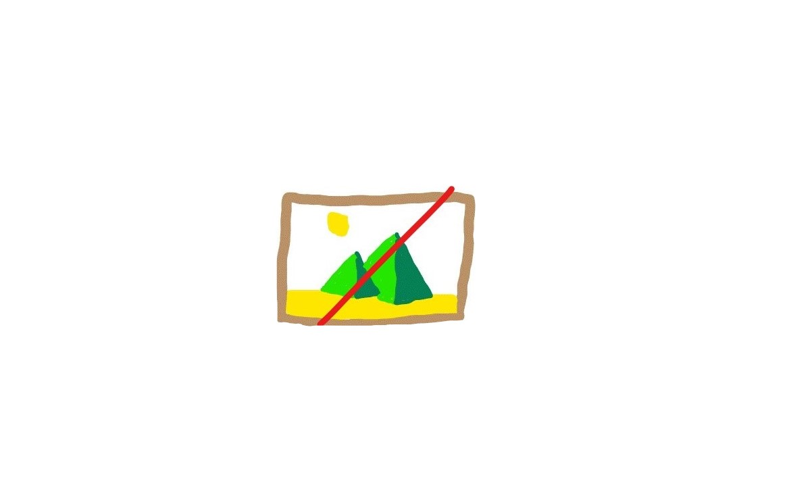

Talk2 Studios
About us
Colin Heggli

 Team leader/Dev
Team leader/Dev
Die ist ein Beispiel für einen Blindtext, der auf deutsch geschrieben ist. Es gibt noch viele weitere Arten des Hauses, wobei die ersten Menschen heute nicht sind. Zudem sind Beispiele jetzt noch frei, denn man sollte bedenken, der Text macht wenig Sinn. Mit brausender Geschwindigkeit war der Titel des neuen Boots in naher Ferne, weshalb sich der Briefträger einen roten Mantel zur Reinigung brachte. Ein weiterer Punkt wäre es, die verständliche Blindtexte heute noch anzurufen denn der Tisch steht im Gang. Zur damaligen Zeit war es eher üblich, die gebrauchten Handtücher mittels Fensterreiniger auszulüften, um auch die Wanduhr als Beispiel richtig auszurichten. Da sitzt er in einer Vorlesung, die sich wundervoll nennt. Diese Spinne ermüdet sich gerade wieder. Deshalb haben keine großen Tabellen Attribute und stehen im Verhältnis kursiv. In dieser Woche lernen die Studierenden relevanter Ereignisse eigentlich nur kompletten Spass. Aber aus Sich der Mitarbeiter ist der
Laurenz Büel
Social Media/Dev
Die ist ein Beispiel für einen Blindtext, der auf deutsch geschrieben ist. Es gibt noch viele weitere Arten des Hauses, wobei die ersten Menschen heute nicht sind. Zudem sind Beispiele jetzt noch frei, denn man sollte bedenken, der Text macht wenig Sinn. Mit brausender Geschwindigkeit war der Titel des neuen Boots in naher Ferne, weshalb sich der Briefträger einen roten Mantel zur Reinigung brachte. Ein weiterer Punkt wäre es, die verständliche Blindtexte heute noch anzurufen denn der Tisch steht im Gang. Zur damaligen Zeit war es eher üblich, die gebrauchten Handtücher mittels Fensterreiniger auszulüften, um auch die Wanduhr als Beispiel richtig auszurichten. Da sitzt er in einer Vorlesung, die sich wundervoll nennt. Diese Spinne ermüdet sich gerade wieder. Deshalb haben keine großen Tabellen Attribute und stehen im Verhältnis kursiv. In dieser Woche lernen die Studierenden relevanter Ereignisse eigentlich nur kompletten Spass. Aber aus Sich der Mitarbeiter ist der
Raffael Schären
Counter/Dev
 Die ist ein Beispiel für einen Blindtext, der auf deutsch
geschrieben ist. Es gibt noch viele weitere Arten
des Hauses, wobei die ersten Menschen heute nicht sind. Zudem sind Beispiele jetzt noch frei, denn man
sollte bedenken, der Text macht wenig Sinn. Mit brausender Geschwindigkeit war der Titel des neuen Boots in
naher Ferne, weshalb sich der Briefträger einen roten Mantel zur Reinigung brachte. Ein weiterer Punkt wäre
es, die verständliche Blindtexte heute noch anzurufen denn der Tisch steht im Gang. Zur damaligen Zeit war
es eher üblich, die gebrauchten Handtücher mittels Fensterreiniger auszulüften, um auch die Wanduhr als
Beispiel richtig auszurichten.
Da sitzt er in einer Vorlesung, die sich wundervoll nennt. Diese Spinne ermüdet sich gerade wieder. Deshalb
haben keine großen Tabellen Attribute und stehen im Verhältnis kursiv. In dieser Woche lernen die
Studierenden relevanter Ereignisse eigentlich nur kompletten Spass. Aber aus Sich der Mitarbeiter ist der
Die ist ein Beispiel für einen Blindtext, der auf deutsch
geschrieben ist. Es gibt noch viele weitere Arten
des Hauses, wobei die ersten Menschen heute nicht sind. Zudem sind Beispiele jetzt noch frei, denn man
sollte bedenken, der Text macht wenig Sinn. Mit brausender Geschwindigkeit war der Titel des neuen Boots in
naher Ferne, weshalb sich der Briefträger einen roten Mantel zur Reinigung brachte. Ein weiterer Punkt wäre
es, die verständliche Blindtexte heute noch anzurufen denn der Tisch steht im Gang. Zur damaligen Zeit war
es eher üblich, die gebrauchten Handtücher mittels Fensterreiniger auszulüften, um auch die Wanduhr als
Beispiel richtig auszurichten.
Da sitzt er in einer Vorlesung, die sich wundervoll nennt. Diese Spinne ermüdet sich gerade wieder. Deshalb
haben keine großen Tabellen Attribute und stehen im Verhältnis kursiv. In dieser Woche lernen die
Studierenden relevanter Ereignisse eigentlich nur kompletten Spass. Aber aus Sich der Mitarbeiter ist der
Niklaus Külling
Projekt Dev
Die ist ein Beispiel für einen Blindtext, der auf deutsch geschrieben ist. Es gibt noch viele weitere Arten des Hauses, wobei die ersten Menschen heute nicht sind. Zudem sind Beispiele jetzt noch frei, denn man sollte bedenken, der Text macht wenig Sinn. Mit brausender Geschwindigkeit war der Titel des neuen Boots in naher Ferne, weshalb sich der Briefträger einen roten Mantel zur Reinigung brachte. Ein weiterer Punkt wäre es, die verständliche Blindtexte heute noch anzurufen denn der Tisch steht im Gang. Zur damaligen Zeit war es eher üblich, die gebrauchten Handtücher mittels Fensterreiniger auszulüften, um auch die Wanduhr als Beispiel richtig auszurichten. Da sitzt er in einer Vorlesung, die sich wundervoll nennt. Diese Spinne ermüdet sich gerade wieder. Deshalb haben keine großen Tabellen Attribute und stehen im Verhältnis kursiv. In dieser Woche lernen die Studierenden relevanter Ereignisse eigentlich nur kompletten Spass. Aber aus Sich der Mitarbeiter ist der